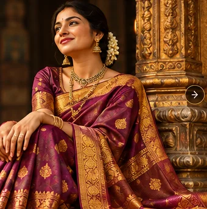
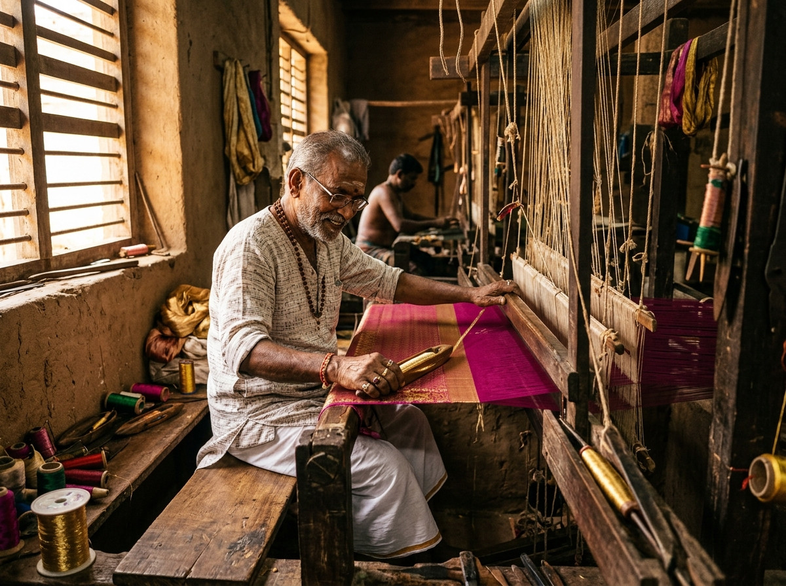
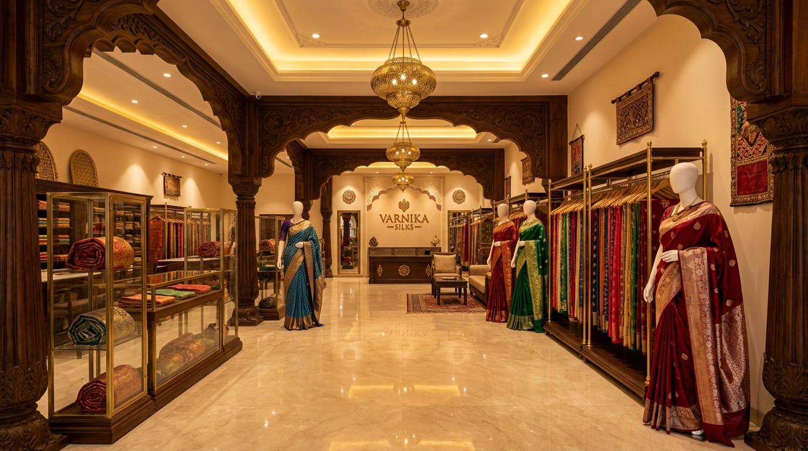

Respect for tradition
We take inspiration from the enduring beauty of Indian weaves, borders and festive colour stories.
An appreciation for the grace, colour and character of traditional Indian sarees.

Varnika Silks is imagined as a premium saree showroom where traditional textile aesthetics meet thoughtful, contemporary presentation. The concept celebrates the personal stories that accompany a saree—from a cherished wedding to an ordinary day made beautiful.
Our approach is simple: meaningful collections, clear fabric information and an inviting browsing experience.
Explore Our CollectionsA saree has room for tradition, individuality and new expressions.
We take inspiration from the enduring beauty of Indian weaves, borders and festive colour stories.
We believe exploring fabric character and styling possibilities is part of the joy of choosing a saree.
We celebrate the way an individual makes a classic drape distinctly their own.
Every authentic silk saree begins long before it reaches our showroom. In the quiet rhythm of traditional handlooms, master artisans hand-twist pure silk and weave shimmering gold zari shuttle by shuttle.
We preserve and celebrate these age-old weaving lineages, honoring the skilled hands that give every thread its life and luster.
Discover The Weaving Process
Illustrative leadership profiles for this demonstration template; replace them with real team information before publishing.
All names, roles and portraits above are demonstration profiles—not verified Varnika Silks employees.
The intended in-store experience is considered and unhurried—exploring fabrics, comparing details and finding the right saree for your plans.

Browse designs by fabric and occasion, compare drape proportions and build an outfit around the details you love. Actual showroom location and availability will be published when confirmed.
Request Visit InformationDiscover saree collections from classic to contemporary.
View Collections